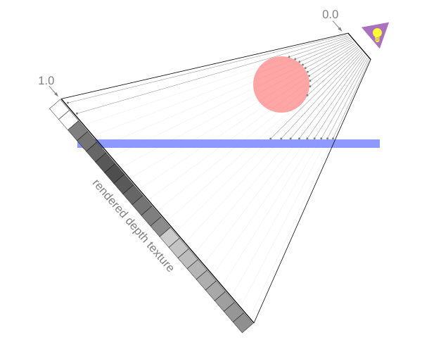

WebGL2 Ombres
Dessinons des ombres !
Prérequis
Le calcul des ombres de base n’est pas si difficile mais il requiert beaucoup de connaissances de fond. Pour comprendre cet article, vous devez déjà comprendre les sujets suivants.
- Projection orthographique
- Projection en perspective
- Éclairage de spot
- Textures
- Rendu vers une texture
- Projection de textures
- Visualisation de la caméra
Donc si vous n’avez pas lu ces articles, veuillez d’abord les lire.
De plus, cet article suppose que vous avez lu l’article sur
moins de code, plus de plaisir
car il utilise la bibliothèque mentionnée là-bas pour
désencombrer l’exemple. Si vous ne comprenez pas
ce que sont les buffers, les tableaux de sommets et les attributs, ou ce que
signifie une fonction nommée twgl.setUniforms pour définir des uniforms,
etc… alors vous devriez probablement revenir en arrière et
lire les bases.
Tout d’abord, il y a plus d’une façon de dessiner des ombres. Chaque façon a ses compromis. La façon la plus courante de dessiner des ombres est d’utiliser des shadow maps.
Les shadow maps fonctionnent en combinant les techniques de tous les articles prérequis ci-dessus.
Dans l’article sur la projection de textures planes on a vu comment projeter une image sur des objets
Rappelons que l’on n’a pas dessiné cette image par-dessus les objets de la scène, mais plutôt, lors du rendu des objets, pour chaque pixel on vérifiait si la texture projetée était dans la plage, si oui on échantillonnait la couleur appropriée depuis la texture projetée, sinon on échantillonnait une couleur d’une autre texture dont la couleur était recherchée en utilisant des coordonnées de texture qui mappaient une texture sur l’objet.
Que se passerait-il si la texture projetée contenait à la place des données de profondeur du point de vue d’une lumière ? En d’autres termes, supposons qu’il y ait une lumière à la pointe du frustum montré dans l’exemple ci-dessus et que la texture projetée contenait des informations de profondeur du point de vue de la lumière. La sphère aurait des valeurs de profondeur plus proches de la lumière, le plan aurait des valeurs de profondeur plus éloignées de la lumière.

Si on avait ces données, quand on choisit une couleur à rendre, on pourrait obtenir une valeur de profondeur depuis la texture projetée et vérifier si la profondeur du pixel qu’on est sur le point de dessiner est plus proche ou plus loin de la lumière. Si c’est plus loin de la lumière, cela signifie que quelque chose d’autre était plus proche de la lumière. Autrement dit, quelque chose bloque la lumière, donc ce pixel est dans une ombre.

Ici, la texture de profondeur est projetée à travers l’espace lumière à l’intérieur du frustum depuis le point de vue de la lumière. Quand on dessine les pixels du sol, on calcule la profondeur de ce pixel du point de vue de la lumière (0.3 dans le diagramme ci-dessus). On regarde ensuite la profondeur correspondante dans la texture de profondeur projetée. Du point de vue de la lumière, la valeur de profondeur dans la texture sera 0.1 car elle a touché la sphère. En voyant que 0.1 < 0.3 on sait que le sol à cette position doit être dans l’ombre.
D’abord, dessinons la shadow map. Prenons le dernier exemple de
l’article sur la projection de textures planes
mais au lieu de charger une texture, on va rendre vers une texture
donc on crée une texture de profondeur et on l’attache à un framebuffer comme DEPTH_ATTACHMENT.
const depthTexture = gl.createTexture();
const depthTextureSize = 512;
gl.bindTexture(gl.TEXTURE_2D, depthTexture);
gl.texImage2D(
gl.TEXTURE_2D, // cible
0, // niveau mip
gl.DEPTH_COMPONENT32F, // format interne
depthTextureSize, // largeur
depthTextureSize, // hauteur
0, // bordure
gl.DEPTH_COMPONENT, // format
gl.FLOAT, // type
null); // données
gl.texParameteri(gl.TEXTURE_2D, gl.TEXTURE_MAG_FILTER, gl.NEAREST);
gl.texParameteri(gl.TEXTURE_2D, gl.TEXTURE_MIN_FILTER, gl.NEAREST);
gl.texParameteri(gl.TEXTURE_2D, gl.TEXTURE_WRAP_S, gl.CLAMP_TO_EDGE);
gl.texParameteri(gl.TEXTURE_2D, gl.TEXTURE_WRAP_T, gl.CLAMP_TO_EDGE);
const depthFramebuffer = gl.createFramebuffer();
gl.bindFramebuffer(gl.FRAMEBUFFER, depthFramebuffer);
gl.framebufferTexture2D(
gl.FRAMEBUFFER, // cible
gl.DEPTH_ATTACHMENT, // point d'attachement
gl.TEXTURE_2D, // cible de texture
depthTexture, // texture
0); // niveau mip
Pour l’utiliser, nous devons pouvoir rendre la scène plus d’une fois avec différents shaders. Une fois avec un shader simple juste pour rendre vers la texture de profondeur et puis à nouveau avec notre shader actuel qui projette une texture.
Donc d’abord, modifions drawScene pour qu’on puisse lui passer le programme avec lequel
on veut rendre
-function drawScene(projectionMatrix, cameraMatrix, textureMatrix) {
+function drawScene(projectionMatrix, cameraMatrix, textureMatrix, programInfo) {
// Créer une matrice view depuis la matrice caméra.
const viewMatrix = m4.inverse(cameraMatrix);
- gl.useProgram(textureProgramInfo.program);
+ gl.useProgram(programInfo.program);
// définir les uniforms qui sont les mêmes pour la sphère et le plan
// note : toutes les valeurs sans uniform correspondant dans le shader
// sont ignorées.
- twgl.setUniforms(textureProgramInfo, {
+ twgl.setUniforms(programInfo, {
u_view: viewMatrix,
u_projection: projectionMatrix,
* u_textureMatrix: textureMatrix,
- u_projectedTexture: imageTexture,
+ u_projectedTexture: depthTexture,
});
// ------ Dessiner la sphère --------
// Configurer tous les attributs nécessaires.
gl.bindVertexArray(sphereVAO);
// Définir les uniforms propres à la sphère
- twgl.setUniforms(textureProgramInfo, sphereUniforms);
+ twgl.setUniforms(programInfo, sphereUniforms);
// appelle gl.drawArrays ou gl.drawElements
twgl.drawBufferInfo(gl, sphereBufferInfo);
// ------ Dessiner le plan --------
// Configurer tous les attributs nécessaires.
gl.bindVertexArray(planeVAO);
// Définir les uniforms qu'on vient de calculer
- twgl.setUniforms(textureProgramInfo, planeUniforms);
+ twgl.setUniforms(programInfo, planeUniforms);
// appelle gl.drawArrays ou gl.drawElements
twgl.drawBufferInfo(gl, planeBufferInfo);
}
Maintenant qu’on va utiliser les mêmes tableaux de sommets avec plusieurs
programmes shader, nous devons nous assurer que ces programmes utilisent les mêmes attributs.
Cela a été mentionné avant en parlant des tableaux de sommets (VAOs dans le code ci-dessus)
mais je pense que c’est le premier exemple sur ce site qui tombe vraiment sur ce
problème. Autrement dit, on va dessiner la sphère et le plan avec à la fois
le programme shader de texture projetée et le programme shader de couleur unie.
Le programme shader de texture projetée a 2 attributs, a_position et
a_texcoord. Le programme shader de couleur unie en a juste un, a_position.
Si on ne dit pas à WebGL quels emplacements d’attributs utiliser, il est possible
qu’il attribue l’emplacement = 0 de a_position pour un shader et l’emplacement = 1 pour l’autre
(ou vraiment WebGL pourrait choisir n’importe quel emplacement arbitraire). Si cela se produit,
les attributs qu’on a configurés dans sphereVAO et planeVAO ne correspondront pas
aux deux programmes.
On peut résoudre cela de 2 façons.
- En GLSL, ajouter
layout(location = 0)devant chaque attribut
layout(location = 0) in vec4 a_position;
layout(location = 1) in vec4 a_texcoord;
Si on avait 150 shaders, on devrait répéter ces emplacements dans tous et suivre quels shaders utilisent quels emplacements
-
Appeler
gl.bindAttribLocationavant de lier les shadersDans ce cas, avant d’appeler
gl.linkProgram, on appelleraitgl.bindAttribLocation. (voir le premier article)
gl.bindAttribLocation(program, 0, "a_position");
gl.bindAttribLocation(program, 1, "a_texcoord");
gl.linkProgram(program);
...
On utilisera cette deuxième façon car c’est plus D.R.Y
La bibliothèque qu’on utilise pour compiler et lier nos shaders a l’option de faire cela
pour nous. On lui passe juste les noms des attributs et leurs emplacements et elle
appellera gl.bindAttribLocation pour nous
// configurer les programmes GLSL
+// note : Puisqu'on va utiliser le même VAO avec plusieurs
+// programmes shader, on doit s'assurer que tous les programmes utilisent
+// les mêmes emplacements d'attributs. Il y a 2 façons de faire ça.
+// (1) les assigner en GLSL. (2) les assigner en appelant `gl.bindAttribLocation`
+// avant le linkage. On utilise la méthode 2 car c'est plus D.R.Y.
+const programOptions = {
+ attribLocations: {
+ 'a_position': 0,
+ 'a_normal': 1,
+ 'a_texcoord': 2,
+ 'a_color': 3,
+ },
+};
-const textureProgramInfo = twgl.createProgramInfo(gl, [vs, fs]);
-const colorProgramInfo = twgl.createProgramInfo(gl, [colorVS, colorFS],);
+const textureProgramInfo = twgl.createProgramInfo(gl, [vs, fs], programOptions);
+const colorProgramInfo = twgl.createProgramInfo(gl, [colorVS, colorFS], programOptions);
Maintenant utilisons drawScene pour dessiner la scène du point de vue de la lumière
puis à nouveau avec la texture de profondeur
function render() {
twgl.resizeCanvasToDisplaySize(gl.canvas);
gl.enable(gl.CULL_FACE);
gl.enable(gl.DEPTH_TEST);
// d'abord dessiner du PDV de la lumière
- const textureWorldMatrix = m4.lookAt(
+ const lightWorldMatrix = m4.lookAt(
[settings.posX, settings.posY, settings.posZ], // position
[settings.targetX, settings.targetY, settings.targetZ], // cible
[0, 1, 0], // haut
);
- const textureProjectionMatrix = settings.perspective
+ const lightProjectionMatrix = settings.perspective
? m4.perspective(
degToRad(settings.fieldOfView),
settings.projWidth / settings.projHeight,
0.5, // near
10) // far
: m4.orthographic(
-settings.projWidth / 2, // gauche
settings.projWidth / 2, // droite
-settings.projHeight / 2, // bas
settings.projHeight / 2, // haut
0.5, // near
10); // far
+ // rendre vers la texture de profondeur
+ gl.bindFramebuffer(gl.FRAMEBUFFER, depthFramebuffer);
+ gl.viewport(0, 0, depthTextureSize, depthTextureSize);
+ gl.clear(gl.COLOR_BUFFER_BIT | gl.DEPTH_BUFFER_BIT);
- drawScene(textureProjectionMatrix, textureWorldMatrix, m4.identity());
+ drawScene(lightProjectionMatrix, lightWorldMatrix, m4.identity(), colorProgramInfo);
+ // maintenant dessiner la scène sur le canvas en projetant la texture de profondeur dans la scène
+ gl.bindFramebuffer(gl.FRAMEBUFFER, null);
+ gl.viewport(0, 0, gl.canvas.width, gl.canvas.height);
+ gl.clear(gl.COLOR_BUFFER_BIT | gl.DEPTH_BUFFER_BIT);
let textureMatrix = m4.identity();
textureMatrix = m4.translate(textureMatrix, 0.5, 0.5, 0.5);
textureMatrix = m4.scale(textureMatrix, 0.5, 0.5, 0.5);
- textureMatrix = m4.multiply(textureMatrix, textureProjectionMatrix);
+ textureMatrix = m4.multiply(textureMatrix, lightProjectionMatrix);
// utiliser l'inverse de cette matrice world pour créer
// une matrice qui va transformer d'autres positions
// pour être relatives à cet espace world.
textureMatrix = m4.multiply(
textureMatrix,
- m4.inverse(textureWorldMatrix));
+ m4.inverse(lightWorldMatrix));
// Calculer la matrice de projection
const aspect = gl.canvas.clientWidth / gl.canvas.clientHeight;
const projectionMatrix =
m4.perspective(fieldOfViewRadians, aspect, 1, 2000);
// Calculer la matrice de la caméra avec lookAt.
const cameraPosition = [settings.cameraX, settings.cameraY, 7];
const target = [0, 0, 0];
const up = [0, 1, 0];
const cameraMatrix = m4.lookAt(cameraPosition, target, up);
- drawScene(projectionMatrix, cameraMatrix, textureMatrix);
+ drawScene(projectionMatrix, cameraMatrix, textureMatrix, textureProgramInfo);
}
Notez que j’ai renommé textureWorldMatrix en lightWorldMatrix et
textureProjectionMatrix en lightProjectionMatrix. Ce sont vraiment les
mêmes choses mais avant on projetait une texture dans un espace arbitraire.
Maintenant on essaie de projeter une shadow map depuis une lumière. Les maths sont les mêmes
mais il semblait approprié de renommer les variables.
Ci-dessus, on rend d’abord la sphère et le plan vers la texture de profondeur en utilisant le shader de couleur qu’on a créé pour dessiner les lignes du frustum. Ce shader dessine juste une couleur unie et ne fait rien d’autre de spécial, ce qui est tout ce dont on a besoin pour rendre vers la texture de profondeur.
Ensuite, on rend la scène à nouveau sur le canvas comme on l’a fait avant, en projetant la texture dans la scène. Quand on référence la texture de profondeur dans un shader, seule la valeur rouge est valide donc on la répètera pour rouge, vert et bleu.
void main() {
vec3 projectedTexcoord = v_projectedTexcoord.xyz / v_projectedTexcoord.w;
bool inRange =
projectedTexcoord.x >= 0.0 &&
projectedTexcoord.x <= 1.0 &&
projectedTexcoord.y >= 0.0 &&
projectedTexcoord.y <= 1.0;
- vec4 projectedTexColor = texture2D(u_projectedTexture, projectedTexcoord.xy);
+ // le canal 'r' contient les valeurs de profondeur
+ vec4 projectedTexColor = vec4(texture2D(u_projectedTexture, projectedTexcoord.xy).rrr, 1);
vec4 texColor = texture2D(u_texture, v_texcoord) * u_colorMult;
float projectedAmount = inRange ? 1.0 : 0.0;
gl_FragColor = mix(texColor, projectedTexColor, projectedAmount);
}
Pendant qu’on y est, ajoutons un cube à la scène
+const cubeBufferInfo = twgl.primitives.createCubeBufferInfo(
+ gl,
+ 2, // taille
+);
...
+const cubeUniforms = {
+ u_colorMult: [0.5, 1, 0.5, 1], // vert clair
+ u_color: [0, 0, 1, 1],
+ u_texture: checkerboardTexture,
+ u_world: m4.translation(3, 1, 0),
+};
...
function drawScene(projectionMatrix, cameraMatrix, textureMatrix, programInfo) {
...
+ // ------ Dessiner le cube --------
+
+ // Configurer tous les attributs nécessaires.
+ gl.bindVertexArray(cubeVAO);
+
+ // Définir les uniforms qu'on vient de calculer
+ twgl.setUniforms(programInfo, cubeUniforms);
+
+ // appelle gl.drawArrays ou gl.drawElements
+ twgl.drawBufferInfo(gl, cubeBufferInfo);
...
et ajustons les paramètres. On va déplacer la caméra et élargir le champ de vision pour la projection de texture pour couvrir plus de la scène
const settings = {
- cameraX: 2.5,
+ cameraX: 6,
cameraY: 5,
posX: 2.5,
posY: 4.8,
posZ: 4.3,
targetX: 2.5,
targetY: 0,
targetZ: 3.5,
projWidth: 1,
projHeight: 1,
perspective: true,
- fieldOfView: 45,
+ fieldOfView: 120,
};
note : j’ai déplacé le code qui dessine le cube de lignes montrant le
frustum hors de la fonction drawScene.
C’est exactement le même que l’exemple du haut sauf qu’au lieu
de charger une image, on génère une texture de profondeur en
rendant la scène vers elle. Si vous voulez vérifier, remettez cameraX
à 2.5 et fieldOfView à 45 et cela devrait ressembler au même
que ci-dessus sauf qu’avec notre nouvelle texture de profondeur projetée
au lieu d’une image chargée.
Les valeurs de profondeur vont de 0.0 à 1.0 représentant leur position à travers le frustum donc 0.0 (sombre) est proche de la pointe du frustum et 1.0 (clair) est à l’extrémité ouverte éloignée.
Donc tout ce qui reste à faire est qu’au lieu de choisir entre notre couleur de texture projetée et notre couleur de texture mappée, on peut utiliser la profondeur de la texture de profondeur pour vérifier si la position Z de la texture de profondeur est plus proche ou plus loin de la lumière que la profondeur du pixel qu’on nous demande de dessiner. Si la profondeur de la texture de profondeur est plus proche, quelque chose bloquait la lumière et ce pixel est dans une ombre.
void main() {
vec3 projectedTexcoord = v_projectedTexcoord.xyz / v_projectedTexcoord.w;
+ float currentDepth = projectedTexcoord.z;
bool inRange =
projectedTexcoord.x >= 0.0 &&
projectedTexcoord.x <= 1.0 &&
projectedTexcoord.y >= 0.0 &&
projectedTexcoord.y <= 1.0;
- vec4 projectedTexColor = vec4(texture(u_projectedTexture, projectedTexcoord.xy).rrr, 1);
+ float projectedDepth = texture(u_projectedTexture, projectedTexcoord.xy).r;
+ float shadowLight = (inRange && projectedDepth <= currentDepth) ? 0.0 : 1.0;
vec4 texColor = texture(u_texture, v_texcoord) * u_colorMult;
- outColor = mix(texColor, projectedTexColor, projectedAmount);
+ outColor = vec4(texColor.rgb * shadowLight, texColor.a);
}
Ci-dessus, si projectedDepth est inférieur à currentDepth, alors
du point de vue de la lumière quelque chose était plus proche de
la lumière donc ce pixel qu’on est sur le point de dessiner est dans l’ombre.
Si on exécute cela, on obtiendra une ombre
Ça marche un peu, on peut voir l’ombre de la sphère sur
le sol mais qu’est-ce que c’est que tous ces motifs étranges là où il
ne devrait pas y avoir d’ombre ? Ces motifs
sont appelés shadow acne. Ils proviennent du fait que les
données de profondeur stockées dans la texture de profondeur ont été quantifiées à la fois
parce que c’est une texture, une grille de pixels, elle a été projetée depuis le
point de vue de la lumière mais on la compare à des valeurs du point de vue de la caméra. Cela signifie que la grille de valeurs dans la
depth map n’est pas alignée avec notre caméra et
donc quand on calcule currentDepth, il y a des moments où une valeur
sera légèrement plus grande ou légèrement plus petite que projectedDepth.
Ajoutons un biais.
...
+uniform float u_bias;
void main() {
vec3 projectedTexcoord = v_projectedTexcoord.xyz / v_projectedTexcoord.w;
- float currentDepth = projectedTexcoord.z;
+ float currentDepth = projectedTexcoord.z + u_bias;
bool inRange =
projectedTexcoord.x >= 0.0 &&
projectedTexcoord.x <= 1.0 &&
projectedTexcoord.y >= 0.0 &&
projectedTexcoord.y <= 1.0;
float projectedDepth = texture(u_projectedTexture, projectedTexcoord.xy).r;
float shadowLight = (inRange && projectedDepth <= currentDepth) ? 0.0 : 1.0;
vec4 texColor = texture(u_texture, v_texcoord) * u_colorMult;
outColor = vec4(texColor.rgb * shadowLight, texColor.a);
}
Et on doit le définir
const settings = {
cameraX: 2.75,
cameraY: 5,
posX: 2.5,
posY: 4.8,
posZ: 4.3,
targetX: 2.5,
targetY: 0,
targetZ: 3.5,
projWidth: 1,
projHeight: 1,
perspective: true,
fieldOfView: 120,
+ bias: -0.006,
};
...
function drawScene(projectionMatrix, cameraMatrix, textureMatrix, programInfo, /**/u_lightWorldMatrix) {
// Créer une matrice view depuis la matrice caméra.
const viewMatrix = m4.inverse(cameraMatrix);
gl.useProgram(programInfo.program);
// définir les uniforms qui sont les mêmes pour la sphère et le plan
// note : toutes les valeurs sans uniform correspondant dans le shader
// sont ignorées.
twgl.setUniforms(programInfo, {
u_view: viewMatrix,
u_projection: projectionMatrix,
+ u_bias: settings.bias,
u_textureMatrix: textureMatrix,
u_projectedTexture: depthTexture,
});
...
faites glisser la valeur du biais et vous pouvez voir comment cela affecte quand et où les motifs apparaissent.
Pour aller plus loin, ajoutons un calcul de lumière de spot de l’article sur les lumières de spot.
D’abord, collons les parties nécessaires dans le vertex shader directement depuis cet article.
#version 300 es
in vec4 a_position;
in vec2 a_texcoord;
+in vec3 a_normal;
+uniform vec3 u_lightWorldPosition;
+uniform vec3 u_viewWorldPosition;
uniform mat4 u_projection;
uniform mat4 u_view;
uniform mat4 u_world;
uniform mat4 u_textureMatrix;
out vec2 v_texcoord;
out vec4 v_projectedTexcoord;
+out vec3 v_normal;
+out vec3 v_surfaceToLight;
+out vec3 v_surfaceToView;
void main() {
// Multiplier la position par la matrice.
vec4 worldPosition = u_world * a_position;
gl_Position = u_projection * u_view * worldPosition;
// Passer la coordonnée de texture au fragment shader.
v_texcoord = a_texcoord;
v_projectedTexcoord = u_textureMatrix * worldPosition;
+ // orienter les normales et les passer au fragment shader
+ v_normal = mat3(u_world) * a_normal;
+
+ // calculer la position world de la surface
+ vec3 surfaceWorldPosition = (u_world * a_position).xyz;
+
+ // calculer le vecteur de la surface vers la lumière
+ // et le passer au fragment shader
+ v_surfaceToLight = u_lightWorldPosition - surfaceWorldPosition;
+
+ // calculer le vecteur de la surface vers la vue/caméra
+ // et le passer au fragment shader
+ v_surfaceToView = u_viewWorldPosition - surfaceWorldPosition;
}
Puis le fragment shader
#version 300 es
precision highp float;
// Passé depuis le vertex shader.
in vec2 v_texcoord;
in vec4 v_projectedTexcoord;
+in vec3 v_normal;
+in vec3 v_surfaceToLight;
+in vec3 v_surfaceToView;
uniform vec4 u_colorMult;
uniform sampler2D u_texture;
uniform sampler2D u_projectedTexture;
uniform float u_bias;
+uniform float u_shininess;
+uniform vec3 u_lightDirection;
+uniform float u_innerLimit; // en espace dot
+uniform float u_outerLimit; // en espace dot
out vec4 outColor;
void main() {
+ // parce que v_normal est un varying, il est interpolé
+ // donc ce ne sera pas un vecteur unitaire. Le normaliser
+ // en fera à nouveau un vecteur unitaire
+ vec3 normal = normalize(v_normal);
+
+ vec3 surfaceToLightDirection = normalize(v_surfaceToLight);
+ vec3 surfaceToViewDirection = normalize(v_surfaceToView);
+ vec3 halfVector = normalize(surfaceToLightDirection + surfaceToViewDirection);
+
+ float dotFromDirection = dot(surfaceToLightDirection,
+ -u_lightDirection);
+ float limitRange = u_innerLimit - u_outerLimit;
+ float inLight = clamp((dotFromDirection - u_outerLimit) / limitRange, 0.0, 1.0);
+ float light = inLight * dot(normal, surfaceToLightDirection);
+ float specular = inLight * pow(dot(normal, halfVector), u_shininess);
vec3 projectedTexcoord = v_projectedTexcoord.xyz / v_projectedTexcoord.w;
float currentDepth = projectedTexcoord.z + u_bias;
bool inRange =
projectedTexcoord.x >= 0.0 &&
projectedTexcoord.x <= 1.0 &&
projectedTexcoord.y >= 0.0 &&
projectedTexcoord.y <= 1.0;
// le canal 'r' contient les valeurs de profondeur
float projectedDepth = texture(u_projectedTexture, projectedTexcoord.xy).r;
float shadowLight = (inRange && projectedDepth <= currentDepth) ? 0.0 : 1.0;
vec4 texColor = texture(u_texture, v_texcoord) * u_colorMult;
- outColor = vec4(texColor.rgb * shadowLight, texColor.a);
+ outColor = vec4(
+ texColor.rgb * light * shadowLight +
+ specular * shadowLight,
+ texColor.a);
}
Notez qu’on utilise juste shadowLight pour ajuster l’effet de light et
specular. Si un objet est dans l’ombre alors il n’y a pas de lumière.
On doit juste définir les uniforms
-function drawScene(projectionMatrix, cameraMatrix, textureMatrix, programInfo) {
+function drawScene(
+ projectionMatrix,
+ cameraMatrix,
+ textureMatrix,
+ lightWorldMatrix,
+ programInfo) {
// Créer une matrice view depuis la matrice caméra.
const viewMatrix = m4.inverse(cameraMatrix);
gl.useProgram(programInfo.program);
// définir les uniforms qui sont les mêmes pour la sphère et le plan
// note : toutes les valeurs sans uniform correspondant dans le shader
// sont ignorées.
twgl.setUniforms(programInfo, {
u_view: viewMatrix,
u_projection: projectionMatrix,
u_bias: settings.bias,
u_textureMatrix: textureMatrix,
u_projectedTexture: depthTexture,
+ u_shininess: 150,
+ u_innerLimit: Math.cos(degToRad(settings.fieldOfView / 2 - 10)),
+ u_outerLimit: Math.cos(degToRad(settings.fieldOfView / 2)),
+ u_lightDirection: lightWorldMatrix.slice(8, 11).map(v => -v),
+ u_lightWorldPosition: lightWorldMatrix.slice(12, 15),
+ u_viewWorldPosition: cameraMatrix.slice(12, 15),
});
...
function render() {
...
- drawScene(lightProjectionMatrix, lightWorldMatrix, m4.identity(), colorProgramInfo);
+ drawScene(
+ lightProjectionMatrix,
+ lightWorldMatrix,
+ m4.identity(),
+ lightWorldMatrix,
+ colorProgramInfo);
...
- drawScene(projectionMatrix, cameraMatrix, textureMatrix, textureProgramInfo);
+ drawScene(
+ projectionMatrix,
+ cameraMatrix,
+ textureMatrix,
+ lightWorldMatrix,
+ textureProgramInfo);
...
}
Pour passer en revue quelques-uns de ces paramètres d’uniforms. Rappelons de l’article sur les lumières de spot
que les paramètres innerLimit et outerLimit sont en espace dot (espace cosinus) et que
nous n’avons besoin que de la moitié du champ de vision car ils s’étendent autour de la direction de la lumière.
Rappelons aussi de l’article sur la caméra que la 3ème ligne d’une matrice 4x4
est l’axe Z donc extraire les 3 premières valeurs de la 3ème ligne de lightWorldMatrix
nous donne la direction -Z de la lumière. On veut la direction positive donc on l’inverse.
De même, le même article nous dit que la 4ème ligne est la position world donc on peut obtenir
la lightWorldPosition et viewWorldPosition (aussi connue comme la position world de la caméra)
en les extrayant de leurs matrices respectives. Bien sûr, on aurait aussi pu
les obtenir en exposant plus de paramètres ou en passant plus de variables.
Effaçons aussi le fond en noir et définissons les lignes du frustum en blanc
function render() {
...
// maintenant dessiner la scène sur le canvas en projetant la texture de profondeur dans la scène
gl.bindFramebuffer(gl.FRAMEBUFFER, null);
gl.viewport(0, 0, gl.canvas.width, gl.canvas.height);
+ gl.clearColor(0, 0, 0, 1);
gl.clear(gl.COLOR_BUFFER_BIT | gl.DEPTH_BUFFER_BIT);
...
// ------ Dessiner le frustum ------
{
...
// Définir les uniforms qu'on vient de calculer
twgl.setUniforms(colorProgramInfo, {
- u_color: [0, 0, 0, 1],
+ u_color: [1, 1, 1, 1],
u_view: viewMatrix,
u_projection: projectionMatrix,
u_world: mat,
});
Et maintenant on a une lumière de spot avec des ombres.
Pour une lumière directionnelle, on copierait le code shader de l’article sur les lumières directionnelles et on changerait notre projection de perspective en orthographique.
D’abord le vertex shader
#version 300 es
in vec4 a_position;
in vec2 a_texcoord;
+in vec3 a_normal;
-uniform vec3 u_lightWorldPosition;
-uniform vec3 u_viewWorldPosition;
uniform mat4 u_projection;
uniform mat4 u_view;
uniform mat4 u_world;
uniform mat4 u_textureMatrix;
out vec2 v_texcoord;
out vec4 v_projectedTexcoord;
out vec3 v_normal;
-out vec3 v_surfaceToLight;
-out vec3 v_surfaceToView;
void main() {
// Multiplier la position par la matrice.
vec4 worldPosition = u_world * a_position;
gl_Position = u_projection * u_view * worldPosition;
// Passer la coordonnée de texture au fragment shader.
v_texcoord = a_texcoord;
v_projectedTexcoord = u_textureMatrix * worldPosition;
// orienter les normales et les passer au fragment shader
v_normal = mat3(u_world) * a_normal;
- // calculer la position world de la surface
- vec3 surfaceWorldPosition = (u_world * a_position).xyz;
-
- // calculer le vecteur de la surface vers la lumière
- // et le passer au fragment shader
- v_surfaceToLight = u_lightWorldPosition - surfaceWorldPosition;
-
- // calculer le vecteur de la surface vers la vue/caméra
- // et le passer au fragment shader
- v_surfaceToView = u_viewWorldPosition - surfaceWorldPosition;
}
Puis le fragment shader
#version 300 es
precision highp float;
// Passé depuis le vertex shader.
in vec2 v_texcoord;
in vec4 v_projectedTexcoord;
in vec3 v_normal;
-in vec3 v_surfaceToLight;
-in vec3 v_surfaceToView;
uniform vec4 u_colorMult;
uniform sampler2D u_texture;
uniform sampler2D u_projectedTexture;
uniform float u_bias;
-uniform float u_shininess;
-uniform vec3 u_lightDirection;
-uniform float u_innerLimit; // en espace dot
-uniform float u_outerLimit; // en espace dot
+uniform vec3 u_reverseLightDirection;
out vec4 outColor;
void main() {
// parce que v_normal est un varying, il est interpolé
// donc ce ne sera pas un vecteur unitaire. Le normaliser
// en fera à nouveau un vecteur unitaire
vec3 normal = normalize(v_normal);
+ float light = dot(normal, u_reverseLightDirection);
- vec3 surfaceToLightDirection = normalize(v_surfaceToLight);
- vec3 surfaceToViewDirection = normalize(v_surfaceToView);
- vec3 halfVector = normalize(surfaceToLightDirection + surfaceToViewDirection);
-
- float dotFromDirection = dot(surfaceToLightDirection,
- -u_lightDirection);
- float limitRange = u_innerLimit - u_outerLimit;
- float inLight = clamp((dotFromDirection - u_outerLimit) / limitRange, 0.0, 1.0);
- float light = inLight * dot(normal, surfaceToLightDirection);
- float specular = inLight * pow(dot(normal, halfVector), u_shininess);
vec3 projectedTexcoord = v_projectedTexcoord.xyz / v_projectedTexcoord.w;
float currentDepth = projectedTexcoord.z + u_bias;
bool inRange =
projectedTexcoord.x >= 0.0 &&
projectedTexcoord.x <= 1.0 &&
projectedTexcoord.y >= 0.0 &&
projectedTexcoord.y <= 1.0;
// le canal 'r' contient les valeurs de profondeur
float projectedDepth = texture(u_projectedTexture, projectedTexcoord.xy).r;
float shadowLight = (inRange && projectedDepth <= currentDepth) ? 0.0 : 1.0;
vec4 texColor = texture(u_texture, v_texcoord) * u_colorMult;
outColor = vec4(
- texColor.rgb * light * shadowLight +
- specular * shadowLight,
+ texColor.rgb * light * shadowLight,
texColor.a);
}
et les uniforms
// définir les uniforms qui sont les mêmes pour la sphère et le plan
// note : toutes les valeurs sans uniform correspondant dans le shader
// sont ignorées.
twgl.setUniforms(programInfo, {
u_view: viewMatrix,
u_projection: projectionMatrix,
u_bias: settings.bias,
u_textureMatrix: textureMatrix,
u_projectedTexture: depthTexture,
- u_shininess: 150,
- u_innerLimit: Math.cos(degToRad(settings.fieldOfView / 2 - 10)),
- u_outerLimit: Math.cos(degToRad(settings.fieldOfView / 2)),
- u_lightDirection: lightWorldMatrix.slice(8, 11).map(v => -v),
- u_lightWorldPosition: lightWorldMatrix.slice(12, 15),
- u_viewWorldPosition: cameraMatrix.slice(12, 15),
+ u_reverseLightDirection: lightWorldMatrix.slice(8, 11),
});
J’ai ajusté la caméra pour voir plus de la scène.
Cela souligne quelque chose qui devrait être évident d’après le code ci-dessus : notre shadow map n’a qu’une certaine taille donc même si le calcul d’une lumière directionnelle n’a qu’une direction, il n’y a pas de position pour la lumière elle-même, on doit quand même choisir une position pour décider de la zone pour calculer et appliquer la shadow map.
Cet article commence à être long et il y a encore beaucoup de choses à couvrir relatives aux ombres donc nous laisserons le reste à l’article suivant.